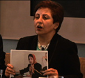

پذيرش > اخبار > نامه سرگشاده شیرین عبادی به کمیساریای عالی حقوق بشر


 نامه سرگشاده شیرین عبادی به کمیساریای عالی حقوق بشر نامه سرگشاده شیرین عبادی به کمیساریای عالی حقوق بشر
22 دی 1389 - - نسخه قابل چاپ
تغییر برای برابری: شیرین عبادی, برنده جایزه صلح نوبل و مدافع حقوق بشر در نامه ای سرگشاده به ناوی پیلای کمیسر عالی حقوق بشر سازمان ملل متحد خواستار رسیدگی وی به وضعیت نسرین ستوده, وکیل مدافع و فعال حقوق بشر, پس از صدور حکم سنگین 11 سال زندان و 20 سال ممنوعیت از کار برای وی شد. متن نامه به شرح زیر است:
خانم پیلای کمیسر عالی حقوق بشر سازمان ملل متحد،
پیرو مکاتبات قبلی به اطلاع می رساند همکار ارجمند من، خانم نسرین ستوده وکیل سر شناس ایرانی که سال ها از قربانیان نقض حقوق بشر به رایگان دفاع کرده است، در تاریخ ۱۳ شهریور ماه سال ۱۳۸۹ به اتهام اقدام علیه امنیت ملی و عضویت در کانون مدافعان حقوق بشر دستگیر شد.
مامور وزارت اطلاعات که مسئول بازجوئی از وی بود ، در روزها ی اولیه بازداشت، پیشنهاد می کند که خانم ستوده در یک مصاحبه تلوزیونی به جرائم مورد ادعای دادستان اعتراف کرده و درخواست عفو کند، چون خانم ستوده حا ضر به چنین کاری نمی شود ا و را در تمامی مدت در سلول انفرادی ومحروم از کلیه حقوق قانونی یک زندانی نگه می دارند.
خانم ستوده دارای دو فرزند سه و یازده ساله است که بر خلاف قانون حتی یک بار نیز نتوانسته با فرزندانش ملاقات حضوری داشته باشد و به همین علت و در اعتراض به وضعیت غیر قانونی خود تا کنون سه بار اعتصاب غذا کرده است که هر سه بار نیز تا حد مرگ پیش رفته و در بیمارستان بستری شده است و بعد از چند روز مجددا اعتصاب غذای خود را شروع کرده - اعتصاب غذای خانم ستوده خشم مامورین قضایی و امنیتی را بر انگیخت و آنها به جای تمکین به قانون ، پرونده دیگری برای او تشکیل می دهند و این بار اتهام وی عدم رعایت حجاب رسمی در فیلم سخنرانی است که سه سال قبل در ایتالیا نشان داده اند.
در نهایت روز ۱۹ دی ماه سال ۱۳۸۹ رسما اعلام می شود که به علت اقدام علیه امنیت ملی ، تبانی و تبلیغ علیه نظام و عضویت در کانون مدافعان حقوق بشر جمعا به ۱۱ سال حبس و ۲۰ سال محرومیت از شغل وکالت و خروج از کشور محکوم شده است .
سرکار خانم پیلای،
در روزهائی که نمایندگان شما با آقای محمد جواد لاریجانی و سایر مقامات دولتی ایران درباره وضعیت حقوق بشر مذاکره می کردند ، یکی از سرشناس ترین مدافعین حقوق بشر در سلول انفرادی و محروم از کلیه حقوق قانونی خود بود . نتیجه مذاکرات با دولت ایران نیز نه تنها منجر به صدور چنین حکم غیر عادلانه ای شد، بلکه مامورین حکومتی که از استقامت خانم ستوده خشمگین شدند ، همسر ایشان – آقای رضا خندان – و وکیل وی - خانم نسیم غنوی – را به عنوان متهم به دادسرای انقلاب احضا ر کر دند و به خیال خود می خواهند سرنوشت خانم ستوده درس عبرتی شود برای کسانی که در مقابل اعمال خلاف قانون بازجویان امنیتی مقاومت می کنند.
کمیسر عالی حقوق بشر،
آزادی خانم نسرین ستوده فقط در صورت برگزاری یک دادرسی عادلانه امکان پذیر است و دستیابی به این حق مسلم جز با حمایت های بین المللی امکان پذیر نیست. بنا بر این خواهشمندم همانگونه که قبلا نیز قول داده بودید برای امکان برخورداری همکار ایرانی خود از یک داد رسی عادلانه، هر اقدامی را که لازم است به عمل آورید و این نامه نیز در پرونده دولت ایران ضبط شود.
با تقدیم احترام
شیرین عبادی
مدافع حقوق بشر و برنده جایزه نوبل صلح ۲۰۰۳
رونوشت:
دفتر آقای بان کی مون دبیر کل سازمان ملل متحد، جهت اطلاع
گزارشگر محترم ویژه حمایت از مدافعان حقوق بشر، جهت اقدام مقتضی
گزارشگر محترم ویژه استقلال قضات و وکلا
کانون بین الملی وکلا، جهت اقدام مقتضی وتماس با مقامات قضایی ایران و کانون وکلای استان مرکز
ارسال به
بالاترین
،
توییتر
،
فریندفید
،
فیسبوک
در همين بخش :
 پروین ذبیحی برنده جایزه حقوق بشری سازمان غيردولتى اتريشى سودويند شد پروین ذبیحی برنده جایزه حقوق بشری سازمان غيردولتى اتريشى سودويند شد
پخش کارت پستال و بروشور در روز جهانی زن در تهران
تمدید زمان برای امضای بیانیهی جمعی از فعالان زن به مناسبت هشت مارس
مجوزی که در نطفه خفه شد
بیش از 2000 امضا در اعتراض به تبعیض های آموزشی به مجلس تحویل داده شد
ديگر بخش ها :
طرح یک میلیون امضا
|
مقالات
|
سایت نوشته ها
|
اخبار
|
گزارش كمپين
|
گفت و گو
|
علیه سکوت
|
كوچه به كوچه
|
نامه های شما
|
گزارش ویژه
|
گفتگو با اعضا
|
ویژه سالگرد کمپین
|
تصویر برابری
|
دل آرام علی
|
تریبون
|
مقالات
|
تاریخ شفاهی
|
خارج از چارچوب
|
کتابخانه
|
درباره کمپین
|
کمپین در شهرها
|
کمپین در بند
|
صدای تغییر
|
ویژه 22 خرداد
|
لایحه حمایت از خانواده
|
گالری
|
عشا مومنی
|
امیر یعقوبعلی
|
خدیجه مقدم
|
راحله عسگری زاده و نسیم خسروی
|
پروین اردلان،جلوه جواهری، مریم حسین خواه، ناهید کشاورز
|
زینب پیغمبرزاده
|
سعیده امین، سارا ایمانیان، محبوبه حسین زاده، ناهید کشاورز و همایون نامی
|
احترام شادفر
|
نسیم سرابندی زاده،فاطمه دهدشتی
|
وبلاگ مهمان
|
پرونده خرم آباد
|
دستگیری ها
|
مریم مالک
|
پرستو اللهیاری
|
مهرنوش اعتمادی
|
سمیه رشیدی
|
Other Languages
|
همراهان
|
«فراخوان کمپین ده روز با بهاره هدایت»
| English
|